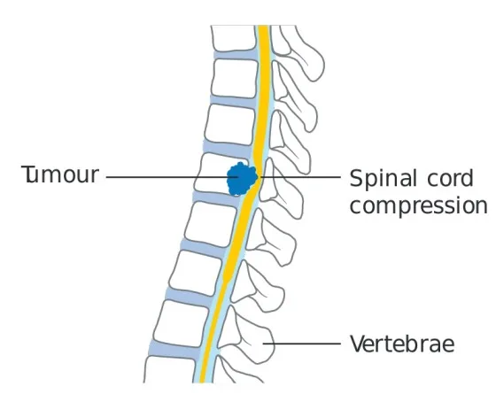
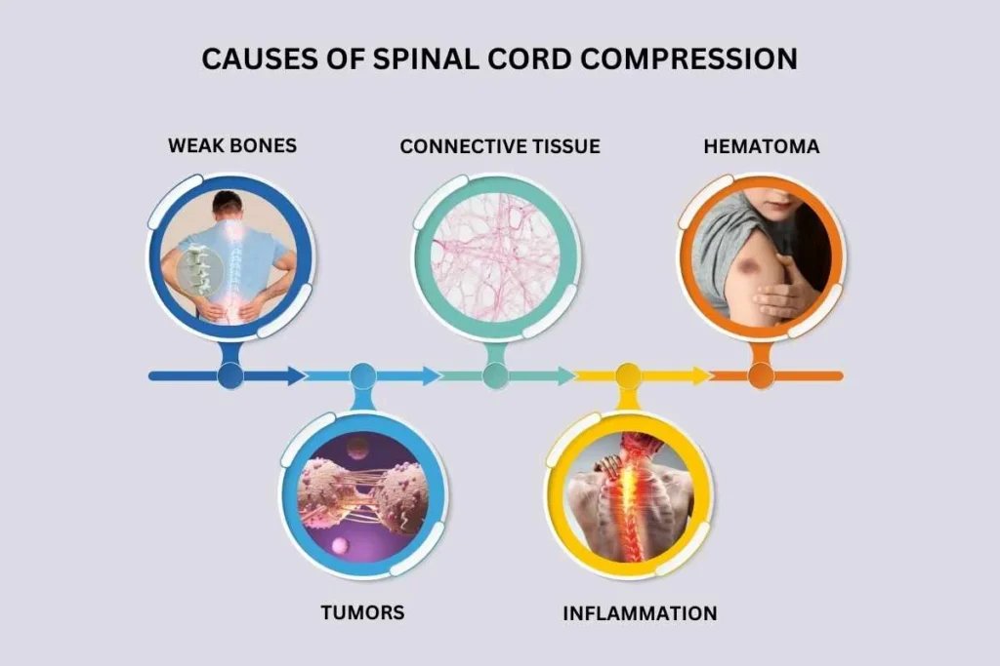
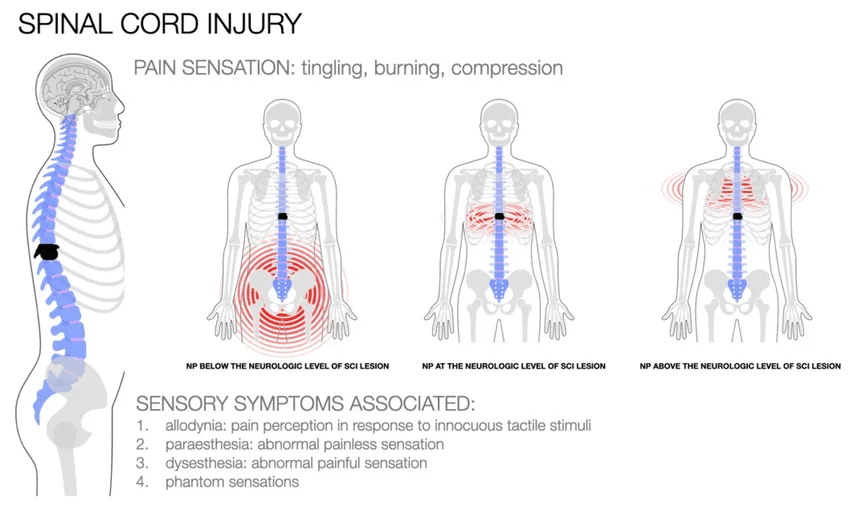
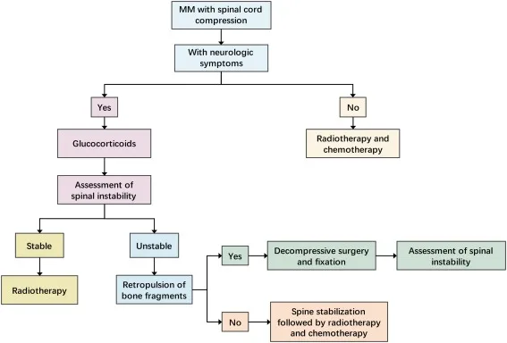

Expanded Nursing Uganda Explanation
Spinal cord compression. should be understood beyond a short definition. Link the concept to patient history, focused assessment, common risks, nursing priorities, documentation and evaluation of outcomes.
01 PALLIATIVE CARE EMERGENCIES
Palliative care emergencies refer to any sudden change in a patient’s condition that necessitates immediate and urgent intervention.
The timely and comprehensive assessment is crucial to achieve positive outcomes.
02 Considerations for Managing Palliative Care Emergencies:
- The nature of the emergency: Understanding the specific emergency at hand is essential.
- The general condition of the patient: Assessing the overall well-being of the patient.
- The stage of the disease and prognosis: Considering the patient’s disease progression and future outlook.
- The availability of possible treatments: Determining the treatment options accessible.
- The affordability of possible treatments: Considering the financial feasibility of available treatments.
- The likely effectiveness and toxicity of available treatments: Evaluating the potential outcomes and side effects.
- The patient’s wishes: Taking into account the preferences of the patient.
- The carer’s wishes: Considering the desires of the caregiver.
03 Assessment of the Emergency:
- Identifying the problem: It is crucial to establish an accurate diagnosis.
- Reversibility of the problem: Assessing if the issue can be reversed.
- Impact on the patient’s overall condition: Determining how resolving the problem will affect the patient’s well-being.
- Maintaining or improving the patient’s quality of life through active intervention: Evaluating if intervention can enhance the patient’s quality of life.
- Availability and affordability of the chosen treatment option: Ensuring that the desired treatment is accessible and financially viable.
- Patient’s preferences: Taking into account the patient’s wishes.
- Caregiver’s preferences: Considering the preferences of the caregiver.
Types of Palliative Care Emergencies
- Severe uncontrolled pain
- Spinal cord compression (SCC)
- Hypercalcaemia
- Haemorrhage
- Superior vena cava obstruction (SVCO).
04 Severe Uncontrolled Pain
Pain management in palliative care is of utmost importance to ensure the comfort and well-being of patients. Severe uncontrolled pain, whether it is acute or chronic ( is that pain which is present for more than 3 months.) , requires immediate attention and intervention.
Understanding Acute Pain
Acute pain can be anticipatory, procedural, acute-on-chronic, or breakthrough pain. It is often associated with cancer complications and can evolve into chronic pain if left uncontrolled. Prompt management of acute pain is crucial to prevent the progression of pain and alleviate distress.
Assessment :
- Establishing the Possible Cause : It is essential to rapidly identify the underlying cause of the pain to determine the most appropriate analgesic intervention.
- Using the PQRST Approach : Assess the pain using the PQRST method, considering its location, severity, aggravating and palliative factors, and referral pattern. Numerical rating scales (NRS), visual analogue scales (VAS), or face scales (for children under 8 years) can be used to measure pain severity.
- Assessing Pain at Rest and During Movement : Recognize that pain intensity can vary during different activities, so evaluate pain levels independently during rest and movement.
Management:
Severe uncontrolled pain (on initial presentation or a sudden escalation of pain) is an emergency; the patient needs constant attention until pain is controlled. It is important to establish rapidly the possible cause of the pain to ensure they give the most appropriate analgesia .
Immediate goal
- **** To reduce the pain and allow the patient to rest. The patient will settle enough to facilitate assessment.
Pharmacological Approach :
- Initial Dose : Administer a stat dose of oral morphine, usually between 5-10mg. If the patient is already on morphine, provide a breakthrough/rescue dose equivalent to their 4-hourly dose immediately.
- Assess Response : Evaluate the patient’s response to the initial dose after 30 minutes.
- Repeat Dose if Needed : If the pain is not relieved, repeat the same dose of morphine.
- Alternative Routes : Consider subcutaneous or intravenous administration if the oral route is unavailable or ineffective.
- Titration of Regular Morphine Dose : Adjust the regular morphine dose based on the patient’s response. Be prepared to increase the dose by 100% or more if necessary.
- Continuous Review : Ensure regular review and consider modifying the management plan if the current intervention is not effective.
Addressing Specific Causes
Severe uncontrolled pain may arise from various sources, including:
- Bone metastases
- Visceral cancer
- Thoracic cancer
- Soft tissue and bone cancer
- Central or peripheral nervous system involvement
- Procedure or treatment-related factors
- Cancer complications
Evaluate and address any specific causes contributing to the sudden escalation or exacerbation of pain.
05 Spinal Cord Compression
The most common cause of SCC is vertebral metastases invading the epidural space and compressing the spinal cord. It is frequently observed in advanced carcinoma, particularly in breast, lung, prostate, kidney, lymphoma, myeloma, and sarcoma cancers.
In 20% of cases, compression of the cord occurs at more than one level. The commonest site for compression is in the thoracic spine (70%), followed by the lumbar spine (20%), and cervical spine (10%). Below the level of L2 compression is the CAUDA EQUINA not the spinal cord.
Presentation
- SCC usually presents with back pain (<90%). Typically pain is the earliest sign. It may be a bony pain due to vertebral metastases, radicular or nerve root compression, a diffuse band-like pain, or an unpleasant sensation below the level of compression. Pain is often exacerbated by straining, coughing, or sneezing.
- Sensation of sharp shooting pains, electric shock-like sensations down the legs may also indicate spinal cord compression. Pain can usually be elicited by percussion of the vertebra within one or two vertebrae of the compression, but absence of tenderness in the presence of suggestive history doesn’t rule out the diagnosis.
- Escalating back pains (i.e. increasing in severity rapidly) that is difficult to relieve should always raise high suspicion of SCC.
- Following escalating back pain, weakness of the limbs tends to occur in continuing SCC. Patients often initially describe their legs as HEAVY or uncoordinated. A history of escalating back pain and heavy legs is sufficient to consider treating for SCC.
On examination
- Tenderness over spine
- motor weakness
- reduced muscle tone
- decreased rectal tone
- decreased reflexes (early stage) and sensory loss with a level.
Investigations
- Plain x-ray to show vertebral metastases or collapse at the appropriate level in 80% of cases. Normal x-ray doesn’t rule out the diagnosis
- MRI (magnetic resonance imaging) is the investigation of choice when available
- CT scan or myelograms can also be useful.
- The single most important prognostic indicator with SCC is neurological status before initiation of treatment, i.e. the less damage the better the potential for recovery.
- Patients with paraparesis do better than those with paraplegia, loss of sphincter control/ function is a bad prognostic sign. Recovery is more likely after lesions of cauda equine.
Management of SCC
- Referral for urgent radiotherapy should be made. It is usually given to a field that includes 1 or 2 vertebrae above, and below the compression.
- Rule out infections e.g. TB, this may delay treatment.
- Urgent treatment may require high dose steroids. Dexamethasone 16-24 mgs oral or IV, this will reduce the inflammation around the tumor (peri tumor edema) and the spinal cord and may improve leg weakness and will buy time before other treatments are commenced.
- If there is a good response to concurrent radiotherapy, dexa can be tapered down every 3 days to the smallest maintenance dose possible, lowest dose at which there is no neurological deterioration in pain control.
- Sometimes after RT, it’s possible to stop the steroids completely without worsening/recurrence of SCC.
- Titrate analgesia and if on, morphine, the dose is likely to need a substantial increase in the early stages of SCC, it should happen at the same time as using steroids and RT.
- Particular attention should be paid to incontinence, bowel care, and pressure areas. Patients with urine retention will require catheterization.
- Those with complete cord compression unresponsive to treatment and compression are likely to require enemas or manual evacuation of the rectum regularly.
- Helping the patient to sit up for periods and regular changing of position will prevent pressure sores/areas.
- Family members should be taught to care for their relative in this way.
- Advising both the patient and family about SCC and its effect, including a realistic assessment of the prospect of recovery, is very important.
- In practice, recovery will usually occur early if it is going to do so, i.e. Improvement in condition occurring within days/weeks.
- After weeks of immobility, recovery is increasingly unlikely, and a difficult prospect for anybody to face, it is kinder to be truthful with the patient at this stage than to suggest future recovery.
- Creating false hope, even when well-intended, is unfair to the patient and it often leads to huge efforts, expense (often paying for expensive physiotherapy, urging patients to try harder, etc.) and ultimately to huge frustration and disappointment when there is no improvement, despite all their efforts and promises. This may damage the relationship between you and the patient if he/she realizes hasn’t been told the truth.
06 Nursing Uganda Clinical Lens
Use Severe uncontrolled pain. as a practical nursing topic, not only a memorized definition. Focus on comfort, dignity, symptom control, communication and family support.
- What to understand first: define severe uncontrolled pain., identify the normal or expected pattern, then explain what changes when the patient is unwell.
- Why it matters in care: the nurse must recognize risk early, explain findings clearly, document accurately and know when to escalate.
- How to revise it: connect each point to assessment, nursing diagnosis or care problem, intervention, rationale and evaluation.
07 Assessment Guide
- Pain and other symptoms, function, sleep, appetite, mood, spiritual distress and family concerns.
- Medication response, side effects, wound or skin needs and end-of-life preferences.
- Caregiver burden, home resources and urgent red flags.
08 Nursing Priorities, Rationales and Outcomes
- Relieve distressing symptoms and prevent avoidable suffering.
- Communicate honestly, respectfully and at the patient's pace.
- Support family care, medication access, dignity and continuity.
The rationale for these priorities is patient safety: nursing actions should prevent deterioration, reduce discomfort, support recovery and create clear evidence for the next caregiver.
- Expected outcome: Symptoms are better controlled, patient preferences are respected and the family knows when to seek help.
09 Patient Teaching and Revision Check
- Explain severe uncontrolled pain. in simple language the patient or caregiver can repeat back.
- Teach warning signs, medicine or follow-up instructions, hygiene or lifestyle points where relevant.
- For exams, prepare a short answer using: definition, causes or risk factors, signs, assessment, management, complications and prevention.
- For ward practice, document baseline findings, actions taken, patient response and the plan for review.
Illustrations and Diagrams (10)






2 more diagrams available, open the lesson for full illustrations.
Related Video Lectures
Watch nursing lecture videos on YouTube for this topic. Opens in a new tab.
Watch on YouTubeExternal link: YouTube may use its own cookies and terms. Nursing Uganda is not affiliated with YouTube.